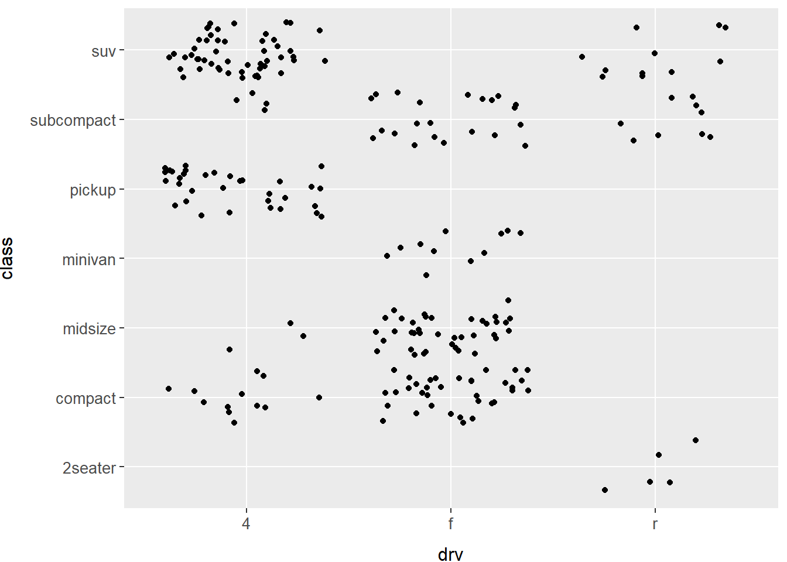

Capítulo 1 Visualização de dados com ggplot2
Para a correta execução dos códigos desse capítulo, utilizaremos algumas configurações específicas.
Inicialmente, precisaremos carregar o pacote nycflights13, que contém os dados de todos os voos da cidade de Nova York em 2013.
1.2 Primeiros passos

Exercício 1.2.3
O que a variável drv descreve?
Solução. Executamos o comando ?mpg no console no R e a página de ajuda foi aberta. Nela encontramos o significado de cada variável do conjunto de dados.
A varíável descreve o tipo de tração dos carros analisados, onde f significa tração dianteira, r significa tração traseira e 4 significa tração nas quatro rodas.
Exercício 1.2.5
O que acontece se você fizer um gráfico de dispersão de class versus drv? Por que esse gráfico não é útil?
Solução.
Apesar de serem exibidos dados no gráfico, nenhuma informação substancial é extraída, uma vez que o tipo de tração não está (a princípio) relacionado com a categoria do carro. Outro fator que torno o gráfico pouco informativo é que há, por exemplo, diversas SUVs com tração nas 4 rodas, contudo os valores ficam sobrepostos no gráfico, não dando dimensão do quanto de dados temos.
Abaixo seguem duas opções de como trazer mais informação ao gráfico:
- a primeira opção adiciona um ruído aos dados (
position = jitterougeom_jitter()) de modo que não haja sobreposição;

- a segunda opção, bem mais avançada, adiciona uma estética de
sizeconsiderando a quantidade de registros.
mpg %>%
group_by(class, drv) %>%
summarize(count = n()) %>%
ggplot(mapping = aes(x = drv, y = class, size = count)) +
geom_point() +
tema## `summarise()` has grouped output by 'class'. You can override using the
## `.groups` argument.1.3 Mapeamentos estéticos
Exercício 1.3.2
Quais variáveis em mpg são categóricas? Quais variáveis são contínuas? Como você pode ver essa informação quando executa mpg?
Solução. Usando ?mpg vemos que as variáveis categóricas são: manufacturer, model, trans, drv, fl e class. As variáveis contínuas são: displ, cty, hwy.
Exercício 1.3.3
Mapeie uma variável contínua para color, size e shape. Como essas estéticas se comportam de maneira diferente para variáveis categóricas e contínuas?
Solução.
## Error in `geom_point()`:
## ! Problem while computing aesthetics.
## ℹ Error occurred in the 1st layer.
## Caused by error in `scale_f()`:
## ! A continuous variable cannot be mapped to the shape aesthetic
## ℹ choose a different aesthetic or use `scale_shape_binned()`Quando possível, a biblioteca ggplot apesenta a estética em um gradiente, como em color e size. Porém, nem sempre isso é possível, como vemos em shape, que só pode ser utilizada com variáveis discretas ou categóricas.
Exercício 1.3.4
O que acontece se você mapear a mesma variável a várias estéticas?
Solução.
ggplot(data = mpg) +
geom_point(mapping = aes(x = displ, y = hwy, size = class, color = class, shape = class)) +
tema## Warning: Using size for a discrete variable is not advised.## Warning: The shape palette can deal with a maximum of 6 discrete values because
## more than 6 becomes difficult to discriminate; you have 7. Consider
## specifying shapes manually if you must have them.## Warning: Removed 62 rows containing missing values (`geom_point()`).
Os valores da variável serão representados de modo a atender todas as estéticas simultaneamente, por exemplo, no gráfico acima é dada uma cor, um formato e um tamanho específicos para cada classe de veículo. Os veículos de dois lugares são exibidos como um disco rosa pequeno.
1.5 Facetas
Exercício 1.5.2
O que significam as célula em branco em um gráfico com facet_grid(drv ~ cyl)? Como elas se relacionam a este gráfico?
Solução. Significa que para aquela combinação de variáveis, não há nenhum valor observado. Por exemplo, não há nenhum veículo com 5 cilindros e tração nas quatro rodas.
Exercício 1.5.3
Que gráficos o código a seguir faz? O que . faz?
Solução. São gerados os gráficos de dispersão segregados pelas variáveis drv e cyl, respectivamente. O . indica que não queremos considerar nenhuma segregação naquela dimensão do grid (linha ou coluna).
Exercício 1.5.4
Pegue o primeiro gráfico em facetas dessa seção.
ggplot(data = mpg) +
geom_point(data = transform(mpg, class = NULL), mapping = aes(x = displ, y = hwy), color = "gray80") +
geom_point(mapping = aes(x = displ, y = hwy)) +
facet_wrap(~ class, nrow = 2) +
temaQuais são as vantagens de usar facetas, em vez de estética de cor? Quais são as desvantagens? Como o equilíbrio poderia mudar se você tivesse um conjunto de dados maior?
Solução. A principal vantagem no uso de facetas é que fica mais fácil analisar os dados quando eles estão separados em seu próprio contexto, contudo visualizá-los assim dificulta a comparação entre grupos.
Exercício 1.5.5
Leia ?facet_wrap. O que nrow faz? o que ncol faz? Quais outras opções controlam o layout de paineis individuais? Por que facet_grid() não tem variáveis nrowe ncol?
Solução.
?facet_wrapOs atributos ncol e nrow são utilizados pelo facet_wrap para determinar o número de colunas ou linhas (respectivamente) nas quais serão distribuídos os gráficos segregados. Esses atributos não figuram em facet_grid pelo fato deste já organizar as facetas retangularmente.